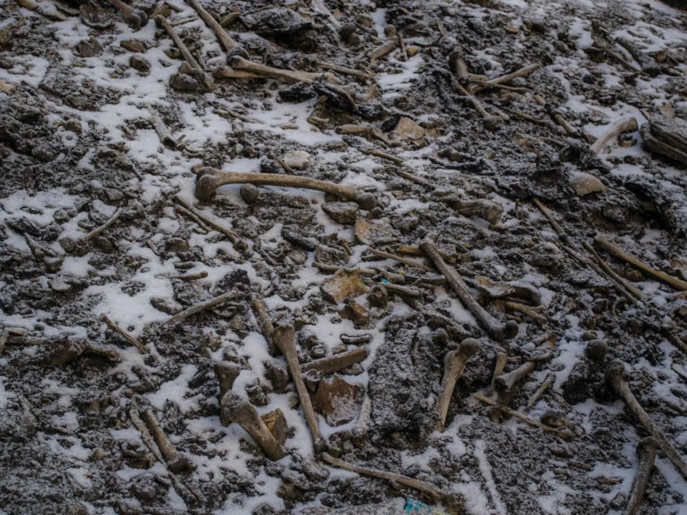
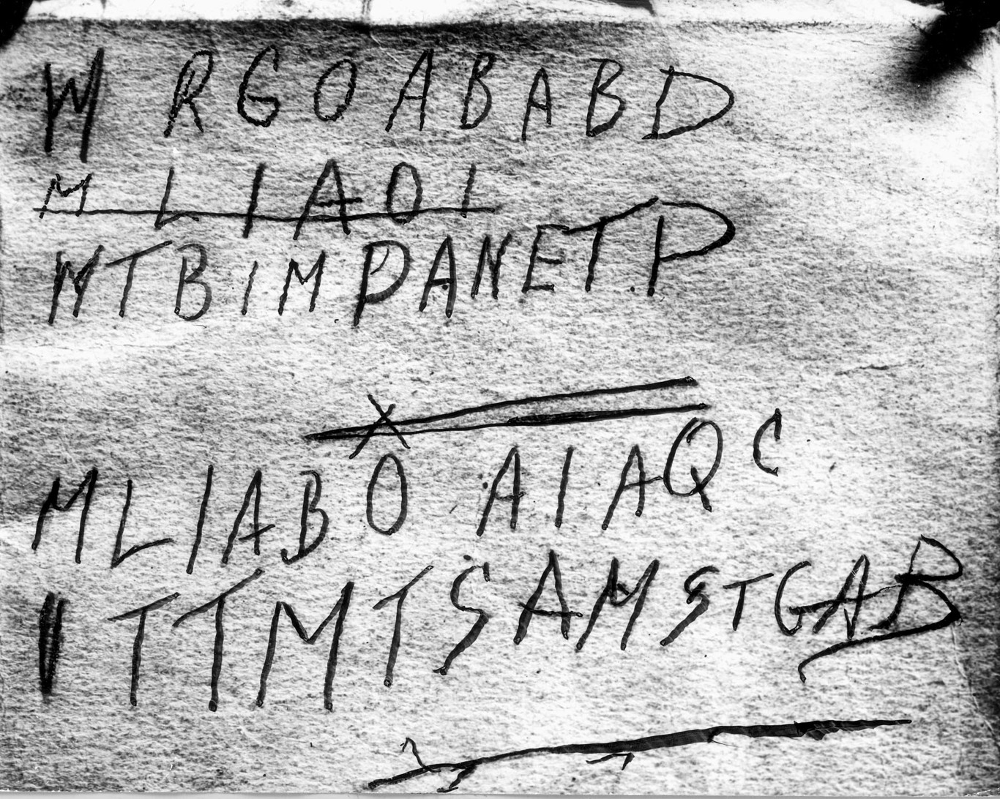
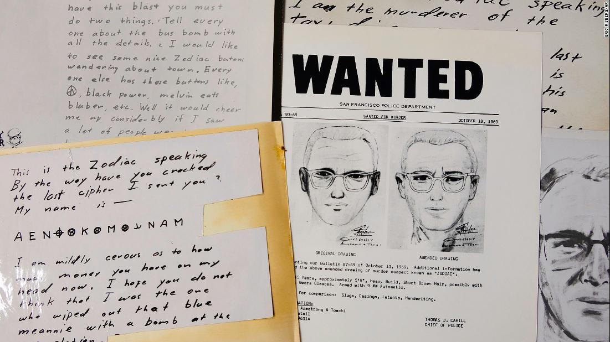
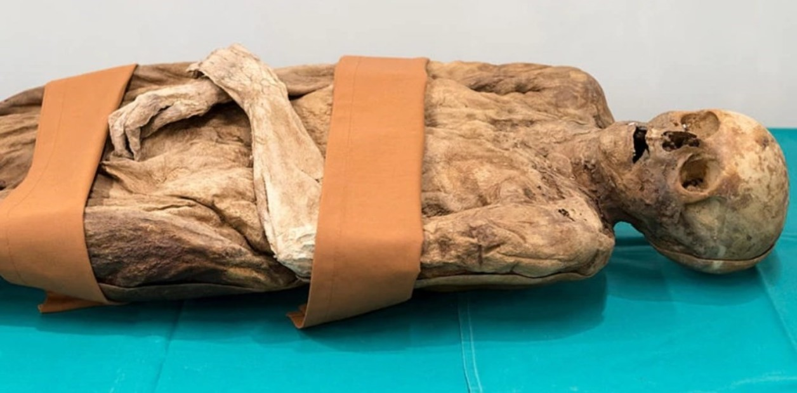

Este caso arranca con la aparición de un hombre muerto en la playa de Somerton, cerca de Adelaida (Australia),
el 1 de diciembre de 1948. Iba vestido y en sus bolsillos llevaba un billete de tren sin usar, un billete de autobús,
chicle, un peine, cigarrillos y un pedazo de papel en el que aparecía la expresión "tamám shud"... más+

El incidente por el que la enigmática zona ganó reconocimiento ocurrió el 5 de diciembre de 1945
cuando un escuadrón de cinco bombarderos de la Marina de Estados Unidos desapareció sin dejar rastros durante un vuelo de entrenamiento
que había salido de Fort Lauderdale, en Florida... más+
Cuando Stephen King escribió la archiconocida novela It allá por 1986, no escribía al azar. La historia que inspiró al genio ocurrió, y puede que sea incluso más oscura que la del payaso de Pennywise, que ha visto su remake en 2017 y e incluso una continuación con It: Chapter II. ¿Le temes a los payasos? Mejor no sigas leyendo... más+

La historia del asesino llamado Zodíaco es un entramado de caminos sin salida. Un laberinto dentro de otro laberinto. Tampoco tiene un principio y un final. El sospechoso más firme murió en 1992 sin que nada pudiera probarse en su contra. Caso cerrado en 2007, más de medio siglo después de la sangrienta serie, logró la cumbre del Mal: el crimen perfecto.... más+
